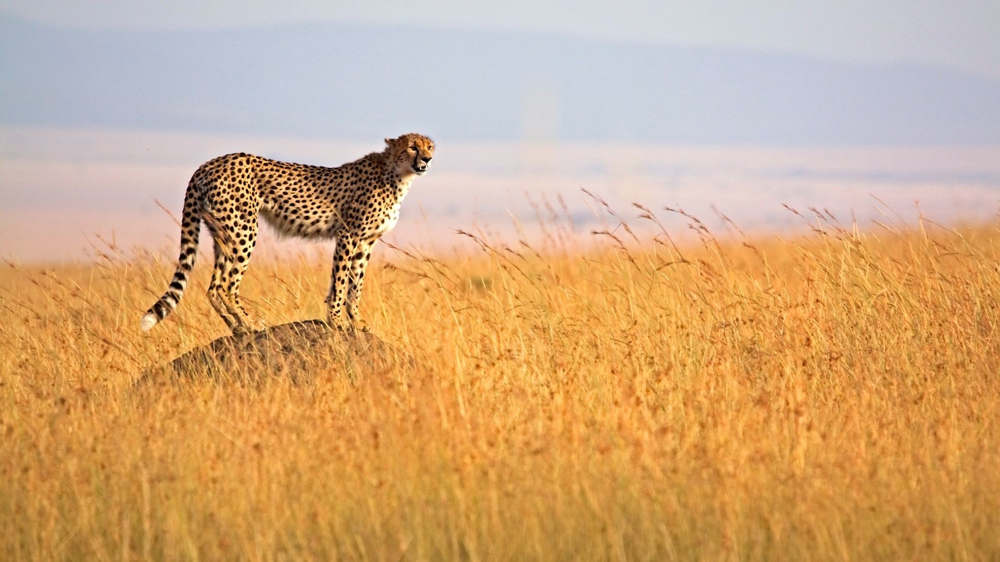
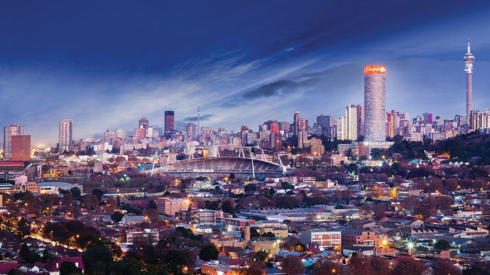
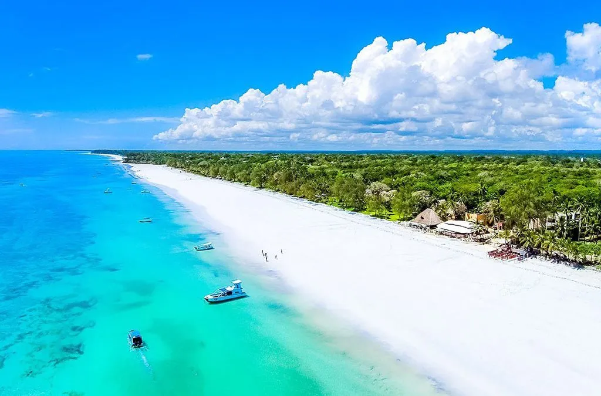
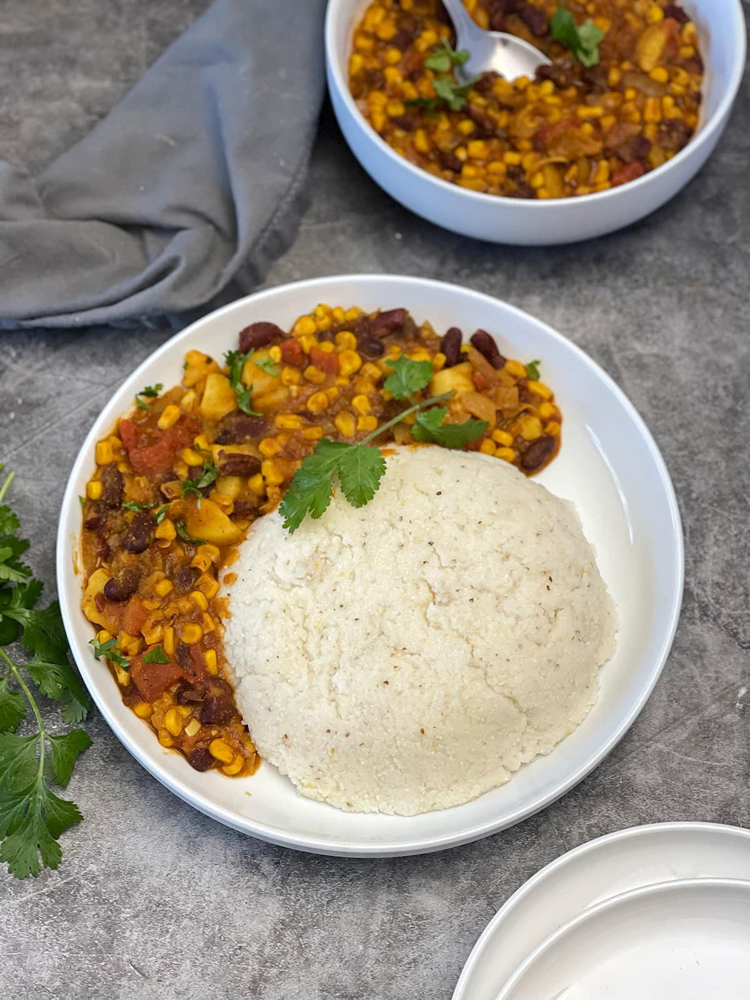
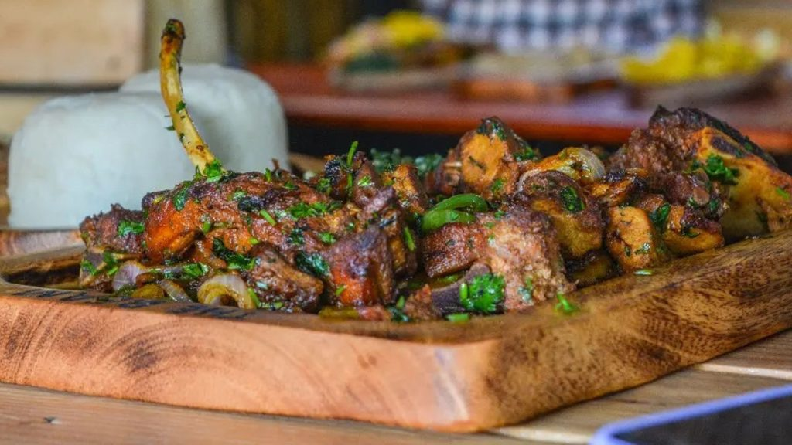

KENYA
About Kenya
Kenya is a beautiful country located in East Africa and is well known for its amazing wildlife and natural landscapes. It has a rich cultural heritage with many different ethnic groups, traditions, and languages. Kenya is especially famous for its national parks and safaris, where tourists can see animals such as lions, elephants, giraffes, and zebras in the wild.
The country also offers stunning beaches along the Indian Ocean, modern cities, and traditional villages. Because of its natural beauty, friendly people, and unique culture, Kenya is a popular and unforgettable destination for travelers from all over the world.
Top Destinations
1. Nairobi

Nairobi is the capital city of Kenya and one of the most important cities in East Africa. It is known for Nairobi National Park, which is located very close to the city center and allows visitors to see wildlife with the city skyline in the background. Nairobi is also a cultural and economic center.
2. Maasai Mara National Reserve
Maasai Mara is one of the most famous wildlife reserves in the world. It is especially known for the Great Migration, when millions of wildebeest and zebras move across the plains. Tourists visit Maasai Mara to go on safaris and see the “Big Five” animals.
3. Mount Kenya
Mount Kenya is the highest mountain in the country and the second highest in Africa. It is a popular destination for hikers and nature lovers. The area around the mountain has forests, lakes, and rare wildlife.
4. Mombasa
Mombasa is a coastal city on the Indian Ocean. It is known for its beautiful white-sand beaches, warm weather, and rich history influenced by African, Arab, and European cultures. Tourists often visit Fort Jesus and enjoy relaxing by the sea.
5. Lake Nakuru National Park

Lake Nakuru is famous for its large number of flamingos and other bird species. It is also home to rhinos and other wildlife. The park offers beautiful views and is ideal for nature and photography lovers.
Kenyan Cuisine
Ugali
Ugali is a staple food in Kenya made from maize flour and water. It is usually served with vegetables, meat, or stew and is eaten by hand.
Nyama Choma
Nyama Choma means “grilled meat” and is very popular in Kenya. It is often eaten during social gatherings with friends and family.
Sukuma Wiki

Sukuma Wiki is a simple dish made from leafy green vegetables cooked with onions and spices. It is commonly served as a side dish.